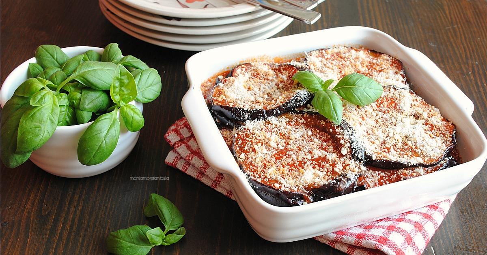

Parmigiana Siciliana
Author by Alessia Cillari
Ingredients
- 2 large eggplants, sliced
- Salt
- Olive oil
- 2 cups tomato sauce
- 1 cup mozzarella cheese, shredded
- 1/2 cup Parmesan cheese, grated
- Fresh basil leaves
Instruction
- Preheat the oven to 375°F (190°C).
- Sprinkle salt on eggplant slices and let them sit for 30 minutes to release excess moisture. Pat them dry.
- Heat olive oil in a pan, and fry eggplant slices until golden brown. Drain on paper towels.
- In a baking dish, layer eggplant slices, tomato sauce, mozzarella, and Parmesan. Repeat until ingredients are used, finishing with a layer of cheese.
- Bake for 25-30 minutes until bubbly and golden.
- Garnish with fresh basil before serving.